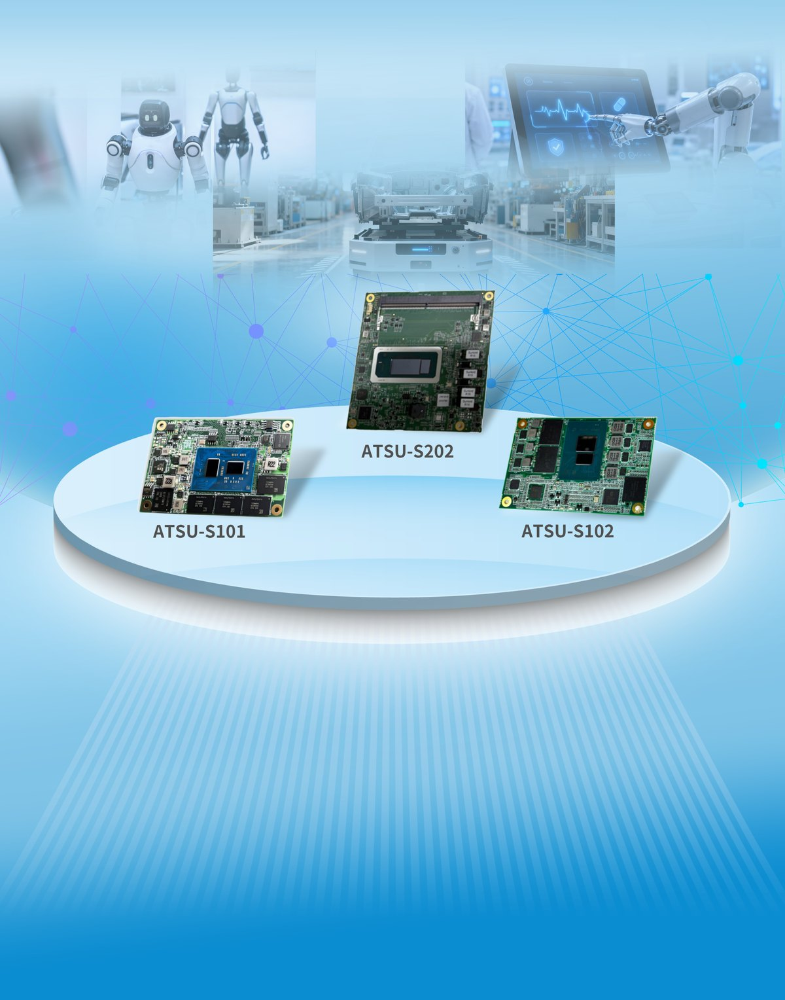
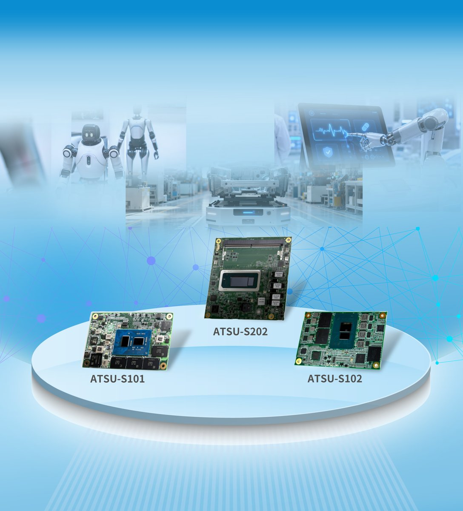
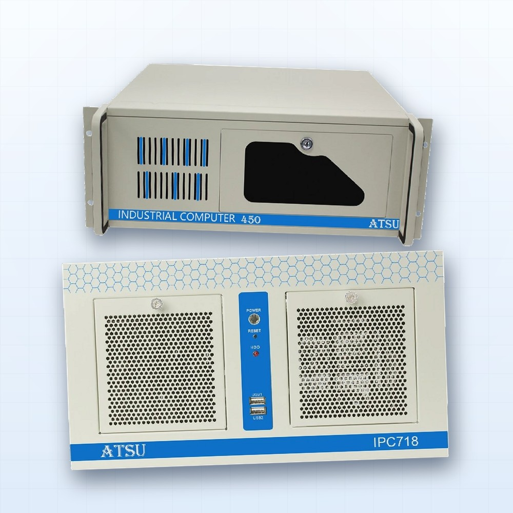

客户选型
按需提供方案。结合算力、接口、功耗与结构约束，给出平台组合建议。
源图智能专注工业计算机主板与嵌入式核心模块的自主研发。我们以 COM 标准化架构把核心算力做成模块，帮助设备制造商用更短周期、更低成本，交付稳定可靠的工业产品。
以 COM 标准化架构为核心，向上延展嵌入式单板与工控整机，向下兼容 x86 与国产化算力平台。硬件、载板、固件与结构协同设计，让平台迁移不再重来一遍。
同一块载板，可以更换不同代际、不同架构的核心模块。产品迭代从“重新设计主板”变成“更换一颗模块”。
COM（Computer on Module）把 CPU、芯片组、内存与常用接口集成在一块标准模块上。您只需聚焦载板设计与整机差异化，把产品上市时间从“年”压缩到“月”。

科学的四步联动流程，把选型、验证、交付与运维串成闭环。您面对的不是一份报价单，而是一支懂工业场景的工程团队。
按需提供方案。结合算力、接口、功耗与结构约束，给出平台组合建议。
了解客户实际应用，精准给出合理方案，评估载板、散热与认证路径。
搭建验证平台、提供样机与参考设计，缩短从设计到量产的验证周期。
电话 / 微信在线支持，覆盖调试、试产与批量交付的每一个节点。
超过八个行业、数百个项目验证过的平台组合。我们不止提供硬件，也提供经过现场检验的配置建议。
产线视觉检测、运动控制与设备联网，多 PCIe 与多网口承载实时数据链路。
车载与轨旁设备需要宽压、宽温与长期供货，模块化架构便于整机厂快速迭代。
超声、影像与检验设备对低功耗、静音与显示接口有严苛要求。
多网口、多核与国产化平台，满足网安设备对吞吐、合规与可信启动的要求。
自助收银与零售终端需要三显、多串口与断电保护，3.5 英寸单板即插即用。
电力、储能与环保监测设备分布广、维护难，远程管理与宽温设计是关键。
从移动网络测试到产线视觉，从自助收银到国产化网安，源图的平台正在客户的设备里持续运行。
9W 低功耗 Mini 模块 + 多组 SIM 卡方案，让手持与车载测试设备在轻量化与工业级性能之间取得平衡。

16 线程算力与 2 路 PCIe Gen4 x4，支撑多相机采集与实时推理，三显接口方便现场调试。

HDMI / DP / VGA / LVDS 四选三，6 路串口连接秤、打印机与扫码枪，内置 UPS 防止断电丢单。